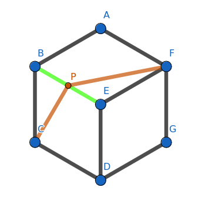
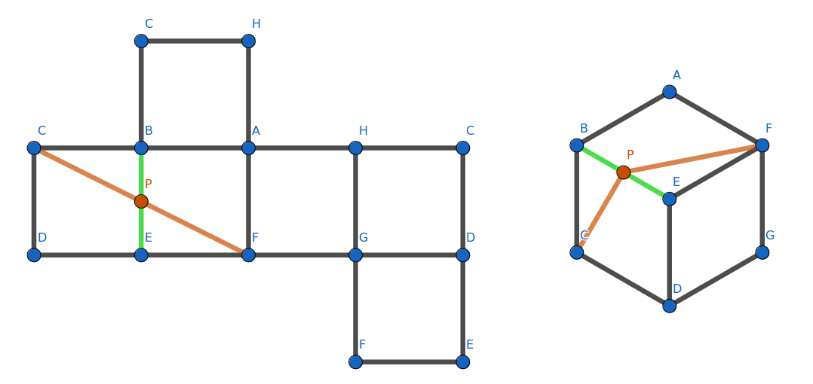
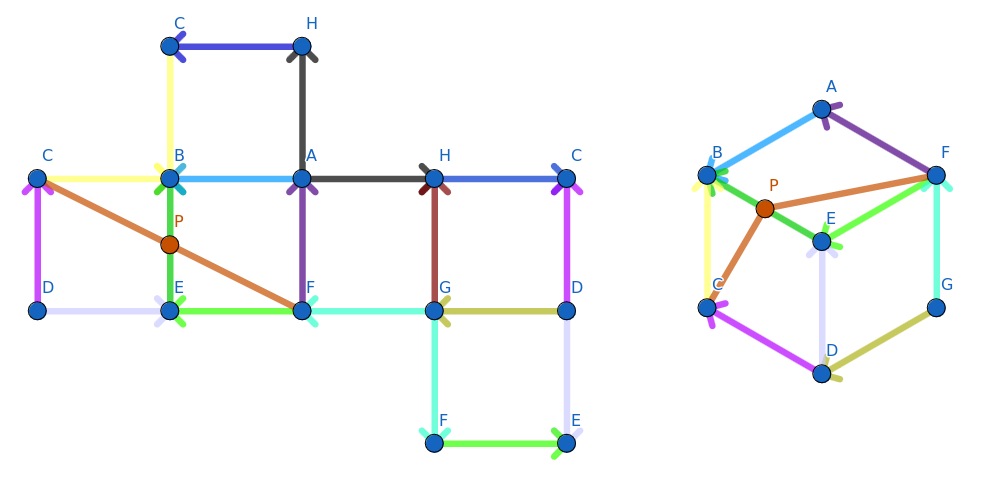

Shortest Paths in Portalgons
Abstract
This page is the gathering of our effort put in the understanding of the "shortest paths in portalgons" problem following the lecture of the paper written by Löffler,Ophelders, Staals, I.Silveira [1] in the scope of the "Computational Geometry INFO-F420" ULB course given by Mr. Stefan Langerman.
We here present after a brief introduction what data structure suits the problem best and the complexity brought with it.
We vividly encourage any interested reader to pursue the lecture of this page by reading the referenced paper [1] for further details.
Introduction
What are Portalgons?
A portalgon is a fragment collection with identified portals.
While fragments are simple polygons, portals are each a pair of edge of same length across any fragments.
A particularity of these portal edges is that they can designate either the same direction or the opposite.
Generalization
Portalgons are in fact the most general representation of any polyhedral surface as you can see in the example of the unfolding of a cube (note we can still represent a not unfoldable polyhedron).
Meaning we also have a 2D plane representation of our shape which is helpful as each face is now clearly visible. It eases the understanding of what is going on on our portalgon as we want to decide which path is the shortest within its underlying space.
The shortest path problem in 3D thus reduces to a shortest path in a polygon.
Which is still not obvious of course, since multiple routes might lead to our destination.
Where we would consider a path to be the number of vertices and the number of portal jumps.
We might not be able to bound the number of crossings that happen as a function of the input because of the portals.
Shortest paths between two points thus taking place on sometimes intricate or curious shapes such as the Mœbius strip.
The biggest challenge with the computation of the shortest path within a portalgon is when we encounter parallel portals having an offset between them in a portalgon.
Indeed, if we have such structure elongated to the infinity we might not be able to bound the number of crossings by a function of the input.
The last criteria of a portalgon is its 'happiness', a criteria which describes the maximum number of times we will cross a portal.
Which will come handy as explained above, to fix bounds about the complexity induced by the portal jumps.




Applications
Are there any real examples of Portalgons?
Shortest Paths
A shortest path in a portalgon is the shortest path between a pair of points lying within its underlying surface, source and destination, such that this is the shortest distance path between the two points.
There can in fact be multiple shortest paths between the two points as we are allowed to cross through portals.
Being intrinsicly polyhedral, meaning that can take place in the third dimension, we need to think carefully about the procedures we will use in order to find such a path, as finding a shortest path now requires to handle more spaces or fragments that may lead to multiple crossings of the same portal which could lead to an unbounded amount of crossings on some cases.
Data Structure
We here present the data structure that maintains the informations in order to compute on such dimension.
Authors
- Schleusner Shan
- Vannimmen Mathieu
- Testaert Sacha
References
- [1] M.Löffler, T.Ophelders, F.Staals, R.I.Silveira, "Shortest Paths in Portalgons", arXiv:2303.08937v1 [cs.CG] 15 Mar 2023
- [2] Wolfgang Muzler, "Shortest Paths in Polygons", Frei Universität Berlin, 22 april 2021
- [3] JOSEPH S. B. MITCHELLt, DAVID M. MOUNT AND CHRISTOS H. PAPADIMITRIOU, "THE DISCRETE GEODESIC PROBLEM", Vol. 16, No. 4, Society for Industrial and Applied Mathematics, pp. 647-668, Aug. 1987